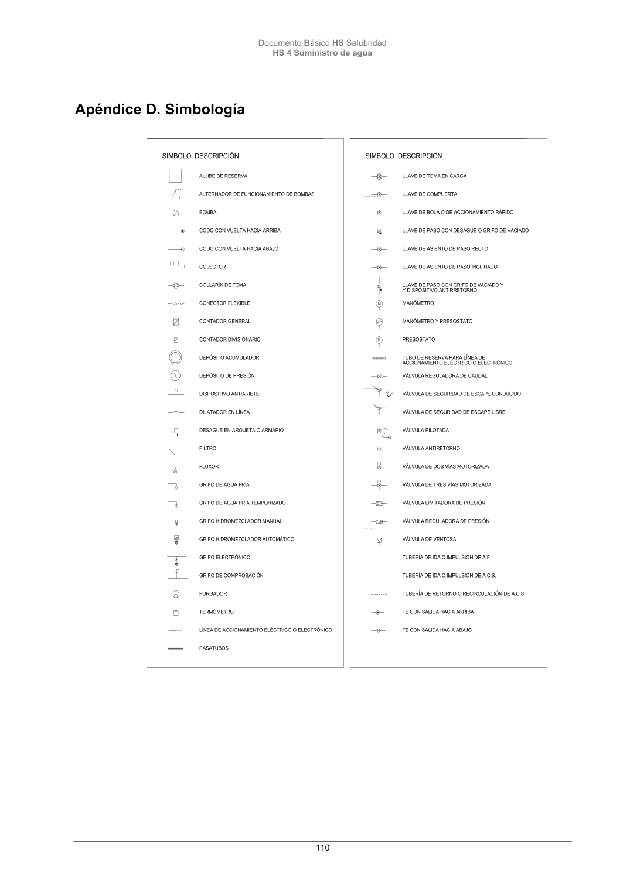

DB-HS · Apéndice C. Normas de referencia · versión 2022-06-14 · capa oficial
Formatos: JSON compacto · Markdown · PDF fuente
Ámbito del documento · texto del ámbito · documento y tablas
ID técnico a0248 · PDF pág. 108-110 · jerarquía no validada por persona · contrastado con el literal de la página 108 (candidato tipográfico); no validado por persona · padre: raíz
Apéndice C. Normas de referencia Este apéndice recoge la referencia completa de las normas citadas en el articulado del DB HS4. UNE 10242:1995 Accesorios roscados de fundición maleable para tuberías. (+UNE-EN 10242/1M:1999, +UNE-EN 10242/A2:2004) UNE 19049-1:1997 Tubos de acero inoxidable para instalaciones interiores de agua fría y caliente. Parte 1: Tubos. UNE 100030:2017 Prevención y control de la proliferación y diseminación de Legionella en instalaciones. UNE 100151:1988 Climatización. Pruebas de estanquidad de redes de tuberías. UNE 100156:2004 IN Climatización. Dilatadores. Criterios de diseño. UNE 100171:1989 IN Climatización. Aislamiento térmico. Materiales y colocación. UNE CEN/TR 12108:2015 IN Sistemas de canalización en materiales plásticos. Práctica recomendada para la instalación en el interior de la estructura de los edificios de siste- mas de canalización a presión de agua caliente y fría destinada al con- sumo humano. UNE-EN 1057:2007+A1:2010 Cobre y aleaciones de cobre. Tubos redondos de cobre, sin soldadura, para agua y gas en aplicaciones sanitarias y de calefacción. UNE-EN 10240:1998 Recubrimientos de protección internos y/o externos para tubos de acero. Especificaciones para recubrimiento galvanizados en caliente aplicados en plantas automáticas. UNE-EN 12201-1:2012 Sistemas de canalización en materiales plásticos para conducción de agua y saneamiento con presión. Polietileno (PE). Parte 1: Generalida- des. UNE-EN 12201-2:2012+A1:2014 Sistemas de canalización en materiales plásticos para conducción de agua y saneamiento con presión. Polietileno (PE). Parte 2: Tubos. UNE-EN 12201-3:2012+A1:2013 Sistemas de canalización en materiales plásticos para conducción de agua y saneamiento con presión. Polietileno (PE). Parte 3: Acceso- rios. UNE-EN 12201-4:2012 Sistemas de canalización en materiales plásticos para conducción de agua y saneamiento con presión. Polietileno (PE). Parte 4: Válvulas. UNE-EN ISO 1452-1:2010 Sistemas de canalización en materiales plásticos para conducción de agua y para saneamiento enterrado o aéreo con presión. Poli(cloruro de vinilo) no plastificado (PVC-U). Parte 1: Generalidades. UNE-EN ISO 1452-2:2010 Sistemas de canalización en materiales plásticos para conducción de agua y para saneamiento enterrado o aéreo con presión. Poli(cloruro de vinilo) no plastificado (PVC-U). Parte 2: Tubos. UNE-EN ISO 1452-3:2011 Sistemas de canalización en materiales plásticos para conducción de agua y para saneamiento enterrado o aéreo con presión. Poli(cloruro de vinilo) no plastificado (PVC-U). Parte 3: Accesorios. Documento Básico HS Salubridad HS 4 Suministro de agua 109 UNE-EN ISO 12241:2010 Aislamiento térmico para equipos de edificación e instalaciones industria- les. Método de cálculo. UNE-EN ISO 15874-1:2013 Sistemas de canalización en materiales plásticos para instalaciones de agua caliente y fría. Polipropileno (PP). Parte 1: Generalidades. UNE-EN ISO 15874-2:2013 Sistemas de canalización en materiales plásticos para instalaciones de agua caliente y fría. Polipropileno (PP). Parte 2: Tubos. UNE-EN ISO 15874-3:2013 Sistemas de canalización en materiales plásticos para instalaciones de agua caliente y fría. Polipropileno (PP). Parte 3: Accesorios. UNE EN ISO 15875-1:2004 Sistemas de canalización en materiales plásticos para instalaciones de agua caliente y fría. Polietileno reticulado (PE-X). Parte 1: Generalida- des. (+UNE-EN ISO 15875-1:2004/A1:2007) UNE EN ISO 15875-2:2004 Sistemas de canalización en materiales plásticos para instalaciones de agua caliente y fría. Polietileno reticulado (PE-X). Parte 2: Tubos. (+UNE- EN ISO 15875-2:2004/A1:2007) UNE EN ISO 15875-3:2004 Sistemas de canalización en materiales plásticos para instalaciones de agua caliente y fría. Polietileno reticulado (PE-X). Parte 3: Accesorios. UNE-EN ISO 15876-1:2017 Sistemas de canalización en materiales plásticos para instalaciones de agua caliente y fría. Polibuteno (PB). Parte 1: Generalidades. UNE-EN ISO 15876-2:2017 Sistemas de canalización de materiales plásticos para instalaciones de agua caliente y fría. Polibuteno (PB). Parte 2: Tubos. UNE-EN ISO 15876-3:2017 Sistemas de canalización de materiales plásticos para instalaciones de agua caliente y fría. Polibuteno (PB). Parte 3: Accesorios. UNE-EN ISO 15877-1:2009 Sistemas de canalización en materiales plásticos para conducción de insta- laciones de agua caliente y fría. Poli (cloruro de vinilo) clorado (PVC-C). Parte 1: Generalidades. (+UNE-EN ISO 15877-1:2009/A1:2011). UNE-EN ISO 15877-2:2009 Sistemas de canalización en materiales plásticos para conducción de insta- laciones de agua caliente y fría. Poli (cloruro de vinilo) clorado (PVC-C). Parte 2: Tubos. (+UNE-EN ISO 15877-2:2009/A1:2011). UNE-EN ISO 15877-3:2009 Sistemas de canalización en materiales plásticos para conducción de insta- laciones de agua caliente y fría. Poli (cloruro de vinilo) clorado (PVC-C). Parte 3: Accesorios. (+UNE-EN ISO 15877-3:2009/A1:2011). UNE-EN ISO 21003-1:2009 Sistemas de canalización multicapa para instalaciones de agua caliente y fría en el interior de edificios. Parte 1: Generalidades. UNE-EN ISO 21003-2:2009 Sistemas de canalización multicapa para instalaciones de agua caliente y fría en el interior de edificios. Parte 2: Tubos. (+UNE-EN ISO 21003- 2:2009/A1:2011) UNE-EN ISO 21003-3:2009 Sistemas de canalización multicapa para instalaciones de agua caliente y fría en el interior de edificios. Parte 3: Accesorios. Documento Básico HS Salubridad HS 4 Suministro de agua 110

PDF fuente redistribuible: copia fiel enlazada en esta página (SHA256 verificado).